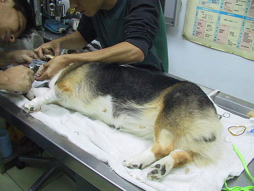
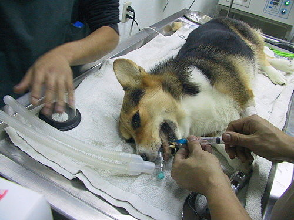
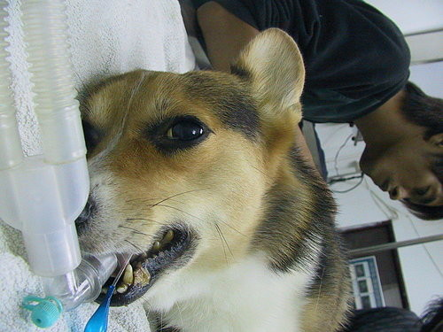
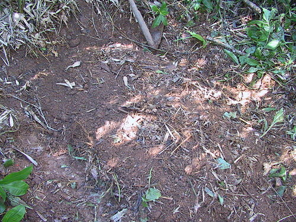
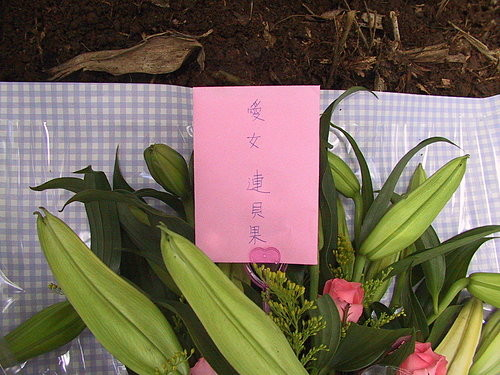
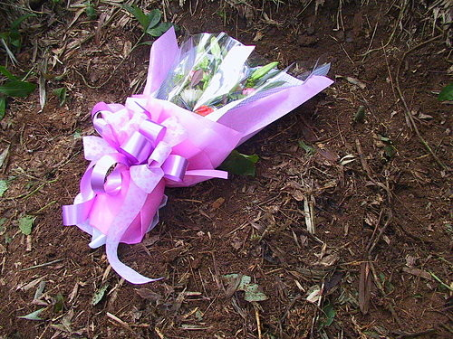

這是從貝果拔的的部落格轉貼的文章
http://tw.myblog.yahoo.com/bagel-lien/article?mid=1012&prev=1074&next=1005
看了真的很心痛很難過!!
今天又看到貝果的女兒"米亞"也去當小天使了!! >.<
短短的時間失去兩個寶貝!!!
現在只希望"阿布基"這個小傢伙可以平安的渡過危險~~快點好起來!!
>>>>>>>>>>>>>>>>>>>>>>>>>>>>>>>>>>>>>>>>>>>>>>>>>>>>>>>>>>>>>>>>>>>>>>>>>>>>>>>
>>>>>>>>>>>>>>>>>>>>>>>>>>>>>>>>>>>>>>>>>>>>>>>>>>>>>>>>>>>>>>>>>>>>>>>>>>>>>>>
~貝~
妳在那裡還適應嗎？一定有看到很多天使吧？見到菩薩要乖乖聽話喔！
現在的拔，只能躲到角落裡暗夜哭泣.........
這件事發生的太快，可能妳也還沒搞清楚吧？拔來說給妳聽。
11月12日
拔下班回來，妳跟往常一樣跳到拔身上熱情的用舌吻來迎接，但拔抱著妳卻感覺妳全身在顫抖，總覺得不對勁，到了晚上餵飯飯時妳一粒未進，但水卻喝非常多，拔發現妳的眼神呆滯，就帶妳到醫院，楊醫師用觸診及檢查妳的眼睛認為妳有黃疸現象，開了保肝的藥我們就回家了。
11月13日
早上拔不放心妳，便帶著妳一同去上班，
到10點多拔看見妳精神越來越差，便再帶妳到醫院，楊醫師見到妳的狀況，當下準備為妳抽血檢驗，同時安排妳住院。
下午1點多，楊醫師告知我妳的驗血報告中肝指數是正常的4~5倍，但其他指數都正常，已經為妳打了點滴加了保肝藥進去。
拔下班後就到醫院看妳，給妳加油打氣，還說：等妳病好了，就帶妳遊山玩水。
到了晚上10點多，拔再到醫院來看妳，見妳已經在休息了便沒吵妳，然後跟楊醫生討論妳的病情
: 這次貝果是中毒的現象，在家裡有誤食到什麼東西嗎，楊醫師這麼問。
我把妳會咬的東西一一的跟楊醫師報告。
但都不是這次中毒的起因，我接著慌張的問，那貝果這樣有生命危險嗎？
楊醫生表示：只要妳把有毒的東西代謝出體外，肝指數就會下降，這樣就沒問題了。
需要住院幾天，明天一早再驗一次血看報告。
11月14日
上午拔打電話到醫院問妳的驗血報告，楊醫師跟我說妳現在體內有溶血的現象，已為妳打了幾支增加紅血球的藥，拔聽完電話把貨送完後中午時到醫院看妳。
一開門走到裡面，看見楊醫師及其他醫師都圍在妳身邊。
當妳用那疲累的眼神看見拔拔時， 我所能做到的堅強，瞬間消失無蹤。
心理吶喊著上天 不要帶走我的貝果，我要她留在身邊當小惡魔，不許祢把她帶去當天使
眼前只見幾位醫生忙裡忙外為妳打解毒針， 而拔卻只能淚汪汪撫摸著妳的身體，哽咽的說： ~貝~ 我的小貝果，妳一定會撐過去的，要加油喔。
接著楊醫師帶我到外面，說明早上已經為妳打了很多針，但妳的併發來的太快，現在能做的都做了，接下來就看老天爺幫不幫妳了。
我離開醫院後馬上回去請假。
寶爸問我妳的情況如何時，我又再度潰堤，泣不成聲。
下午再度回到醫院來看妳，妳最喜歡拔用臉頰來磨蹭妳的全身，還把妳的嘴套進拔的嘴裡對你吹氣，看見你那發黃的眼睛及口腔，拔的心臟有如被撕裂般的痛 ！
~貝~我輕輕的貼著妳的耳朵說: 拔回家洗個澡換件衣服等一下再過來厚！
一回家洗好澡換好衣服想到要帶相機卻發現沒電了，趕緊找充電器來充電。
只充了一下下，晚間6點40分醫院楊醫師來電 : 連先生，貝果好像快不行了喔。
我聽到立刻趕去醫院，途中拔已顧不得路人開始狂哭起來了，進了醫院看見所有的醫生都再為妳急救做插管



但我知道這只能延緩你離開的時間。
可我看見妳痛苦的樣子，～我捨不得啊～
就請楊醫師讓妳自然走吧。
讓拔陪在妳身邊好安心的走，這時拔還強作鎮定在妳耳朵跟妳說: ~貝~放下一切喔，安心的離開喔，拔有請菩薩來接妳啦，妳放心啦，拔會照顧好自己的，也會照顧好阿布基和妳的骨肉〈墩子跟米亞〉妳不要怕喔！妳要到更好的地方耶，
我就這樣一直念著一直念著........
到妳沒有了呼吸，這時大約7點10分。
而我的靈魂好像被抽離般。
妳走了，我變的好孤獨。
我知道妳不願意走，因為妳的眼睛是開的。
拔用嘴唇想把妳的眼皮闔上，但妳不肯。
拔只好求妳了。
~貝~
妳是拔最聰明的女兒，也是最愛拔最聽拔的話的，乖！放心的走，把眼睛闔上好嗎。
拔現在去把車開來接妳，等拔一下下喔！
等我把車開來時，寶爸和巫婆媽也到醫院陪在妳身邊了。
這時妳已經把眼睛闔上一半了，很乖喔！
原本寶爸建議我們用火化的方式來做，但拔知道妳喜歡大自然，所以拔會帶妳到山上來安置，而寶爸也買了蓮花及錢錢給妳喔。
現在要離開醫院囉，要去坐我們家的車車囉，要跟在拔身邊啊。
原本寶爸及巫婆媽也要跟著一起來送妳，但拔想要跟妳獨處，所以婉謝了他們。
~貝~
這是最後一次坐著拔開的車了，拔會慢慢開的，讓妳坐久一點。
來到了山上，
我們一起進入了漆黑的山林。
可是拔一點都不怕。
因為世上再也沒有比失去摯愛更可怕的了。
讓拔最後一次親吻妳的臉及聞聞妳的味道吧。
這時妳的眼已完全闔上了，我就知道妳最聽話了。
當拔一把土一把土蓋著妳時，腦海上浮現著從前妳跟拔玩鬧及頂嘴的畫面！
天啊！這打擊太大了！拔捨不得妳啊！
沉默了一會後，對妳說：今晚頭一夜妳別害怕，拔明天會再上來看妳，要乖乖喔。
11月15日
上午今天拔也請假了，去花店買了四種顏色的太陽花〈這就像熱情的妳如太陽一般給人溫暖〉
香香的百合〈讓妳去到任何地方都有一股淡淡的清香〉
還有粉紅色的玫瑰〈這代表我們父女兩永恆的愛〉
今天再稍微整理了一下妳的新家



拔也在妳身邊待久一點。
安息吧
~貝~
不要牽絆著任何事物了，拔有空會上來看妳的，如果妳想看拔拔的話，就進來拔的夢裡吧。
連士淵 泣書